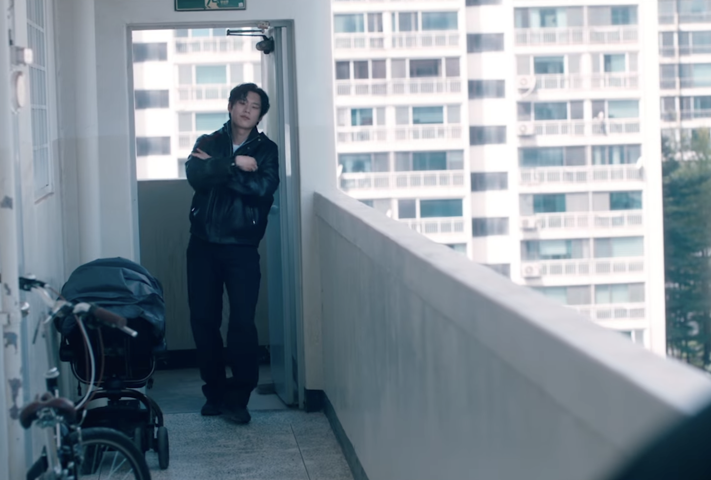
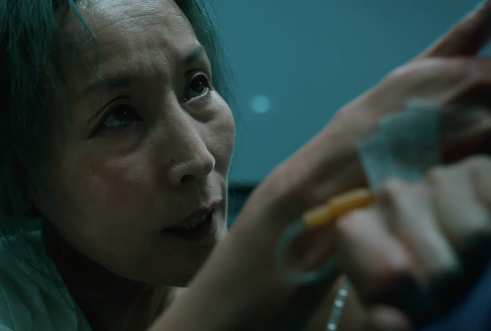

조각

60대 여성 킬러 조각.

그녀는 냉철하고 노련한 업계의 대모다.
수많은 세월 동안 단 한 번의 오차도 없이 의뢰를 처리해 온 그녀.

하지만 흐르는 시간 속에서 그녀의 칼날도 조금씩 무뎌지기 시작한다.
투우의 등장

조각의 곁을 맴돌며 예리하게 숨통을 조여오는 새로운 인물.

숨 막히는 긴장감 속에서 조각에게 자꾸만 시비를 거는 투우.

그의 도발은 단순한 장난이 아닌, 거대한 폭풍의 전조였다.
조각의 부상 그리고 강 박사와의 만남

노화로 인해 이전 같지 않은 몸. 한순간의 실수로 조각은 치명적인 부상을 입고 의식을 잃은 채 강 박사의 병원으로 실려 온다.

정신이 들자마자 킬러로서의 본능적인 방어기제와 극도의 경계심으로 눈앞의 강 박사를 거칠게 몰아붙이는 조각.

차가운 무기를 목에 겨눈 숨 막히는 대치 속에서, 두 사람의 기묘하고도 위태로운 인연이 시작된다.
지키고 싶은 것들이 생긴 조각
늘 피와 어둠뿐이었던 조각의 삶 속에, 하나뿐인 어린 딸을 품에 소중히 안아 지켜내는 강 박사의 따뜻하고 무해한 일상이 들어오기 시작한다.

그들 부녀가 함께 나누는 따스한 미소와 평화를 곁에서 지켜보며, 조각은 평생 느껴보지 못한 감정의 일렁임을 겪는다. 쇠잔해져 가던 킬러의 마음속에 처음으로 '파괴'가 아닌 '지키고 싶은 마음'이 태어난 순간이었다.
소중한 것들을 지키기 위한 마지막 혈투
강박사의 딸을 지키기 위한 조각과 그녀를 방해하려는 투우의 마지막 혈투가 시작된다.